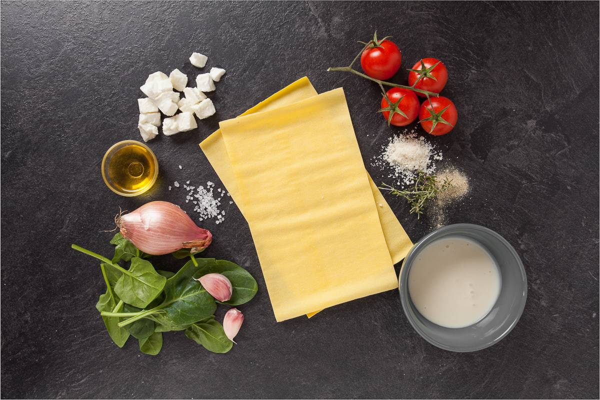

Recetas con sabor
Ingredientes para nuestra lasaña
Antes de empezar a cocinar, debemos tener todos los ingredientes
preparados y organizados. Esta lista está pensada para
4 personas.
¡Una buena receta comienza con una buena preparación!

1. Ingredientes para la salsa boloñesa
- 500 g de carne picada de ternera o mezcla de ternera y cerdo.
- 400 g de tomate triturado.
- 1 cebolla mediana.
- 1 zanahoria.
- 1 diente de ajo.
- 2 cucharadas de aceite de oliva.
- Medio vaso de vino blanco (opcional).
- Sal y pimienta al gusto.
Consejo: corta las verduras en trozos pequeños
para que se integren bien en la salsa.
2. Ingredientes para la bechamel
- 50 g de mantequilla.
- 50 g de harina de trigo.
- 500 ml de leche.
- Una pizca de nuez moscada.
- Sal y pimienta al gusto.
Consejo: La bechamel aportará una textura cremosa a la lasaña.
Es importante remover bien para evitar que se formen grumos.
3. Ingredientes para el montaje
- 12-16 láminas de pasta para lasaña, según el tamaño de la fuente.
- 100 g de queso parmesano rallado.
- La salsa boloñesa preparada.
- La bechamel preparada.
Consejo: Puedes ajustar el número de láminas según las instrucciones
del fabricante y el tamaño de la fuente que utilices.
¿Ya tienes todo preparado?
Comprueba la lista, prepara los utensilios y continúa con
las instrucciones para elaborar tu lasaña.
Continuar a la preparación →